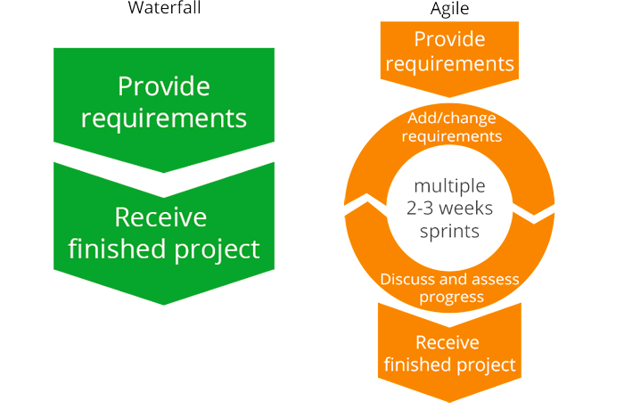

CUSTOM SOFTWARE DEVELOPMENT
BUSINESS SOFTWARE TAILORED TO YOUR NEEDS
NaderiHub's offers development of powerful, one-of-a-kind software intended to meet customers’ unique demands. Our skilled specialists know the game of business and deliver successful solutions that accord with all the specified requirements while invariably staying within time and budget limits. Along with full-cycle custom software development, we provide software maintenance and platform-based customization.
DEVELOPMENT PROCESS
With a serious and regardful attitude towards your business, we start from the point of concept examination: our specialists carefully analyze your needs and help you create a detailed software requirements specification, which is indispensable for implementing the project the way you envision it. We offer two most common and effective development methodologies: waterfall and agile. While with waterfall you decide all the requirements for your project at the very start and get exactly what you need for a set price at a set time, with agile you are in charge during the whole development process and are welcome to add/change requirements and assess the already implemented functionality on the go.
Apart from development, NaderiHub's offers deployment and further maintenance of the existing software.
QUALITY
Among NaderiHub’s specialists there are only officially certified experts and talented developers with years of experience and technology + industry knowledge. Prioritizing competence over speed, they always deliver the product in budget and on schedule. NaderiHub’s developers – over 50% of whom are Seniors and Leads – present top-grade software with an architecture that guarantees a solid foundation for further expansion and maintenance, a great user interface and no performance issues.
TECHNOLOGIES
We master all levels of software complexity and provide quality solutions on the following technologies:
- Back end and desktop: Java,Go, PHP, Node.js, C++
- Mobile: iOS, Android, Windows Phone
- Frontend: HTML5, CSS3, JS
- Databases:MySQL, Oracle, SQL Azure, Microsoft SQL Server, PostgreSQL, MongoDB
INTEGRATION
Software integration can sometimes appear a very lingering process, but we acknowledge its importance and are completely prepared for challenges. NaderiHub’s experts ensure seamless integration of the software with your ERP, CRM, ECM and other business systems.
Web application development Services
Our dedicated web development team of experts brings in over 12 years of domain experience. Over dozen of web applications delivered by NaderiHub power businesses across various industries: healthcare, telecommunications, banking and financial services, retail, manufacturing, and education.
Be it custom web app development from scratch, migration from your legacy application to a new solution, or enhancement of the front-end functionality, we are eager to accept your web development challenge staying within time and budget limits.
The web applications we create

Enterprise systems: ERP, CRM, PLM, inventory and purchasing management, order processing
We help to automate your staff’s daily activities, boost in-company cooperation and facilitate management so that you can focus on more advanced business issues.

Platforms for external collaboration: customer, partner, vendor, learning, community and other portals
We provide functionality that enables efficient e-communication for better user engagement and long-term relations with customers, partners and vendors

Public online service platforms
We have advanced our competencies in diverse online services with rich functionality and responsive UIs, such as:
- Platforms for online consulting
- Multimedia storing and processing solutions
- Booking solutions
- E-commerce applications
- Payment systems, cashback services
- Tools for near-real-time translation, bond portfolio management, and more

Industry specific solutions: web applications for healthcare, telecoms, retail, banking and financial services
Our industry experience makes us competent in delivering solutions that solve specific business challenges. The web applications we developed now ease patient examination and treatment for US health organizations, as well as ensure prompt interdepartmental communication for restaurant chains, to name a few examples.
Contact us to find out what we can offer for your business.
Software Testing SERVICES and QA
We offer software testing services for large and complex projects. Combining well-developed QA processes with state-of-the-art tools and methodology, we complete the most challenging projects within time and budget. Our testing engineers have experience in Healthcare, Banking, Retail, Manufacturing, Telecom and more.
OUR OFFER: SOFTWARE TESTING & QA OUTSOURCING
We provide quality assurance outsourcing within two cooperation models:
|
|
Pure-play testing services |
|
Testing team augmentation |
Whatever you choose, we’ll address the challenges with regard to your business goals. We guarantee quality throughout the testing process.
Software testing services with NaderiHub include:

- Analyzing project requirements. Our testing team studies your project requirements. In case the requirements are insufficient, our testing team will help you improve them.
- Defining key points of the project. Closely cooperating with the rest of the project team, testing engineers define sets of conditions that allow the team to start, postpone, resume or stop the testing process.
- Test analysis and design. The testing team transforms checklists (test ideas) into test cases and test suits.
- Test implementation. Our testing team runs test cases and timely provides the information on bugs and defects to the developers.
- Result analysis and accountability. The testing team provides test summary report describing the results of testing efforts and software quality overview throughout a given cycle.
For each project iteration we:
- Create test documentation required by IEEE 829-2008 to ensure systematic and complete test coverage and ensure full visibility of the project’s activities. All the documents are revised regularly to stay up-to-date.
- Apply proven testing techniques, tools and methodologies to perform different types of testing and not merely meet, but surpass your quality expectations.
WE ADDRESS PROJECT CHALLENGES
|
|
Changing requirements Successfully adapting to changes in your project requirements, we work swiftly and efficiently. |
|
|
Lack of efficient horizontal collaboration We seamlessly integrate into your project team and effectively cooperate with your PMs, stakeholders, BAs and developers ensuring efficient horizontal cooperation to keep you up-to-date with the project workflow. |
|
|
Insufficient or excessive testing Thanks to domain expertise, our specialists successfully balance testing efforts featuring expected system functionality and vulnerable points. |
|
|
Lack of control over testing We provide all documents, reports and ad hoc information about project quality so that you stay in control of the testing process. |
|
|
Functional testingNaderiHub’s testing team assures that your product works according to your business logic and specific requirements. |
Performance testingOur testing team reveals stress, load, scalability or reliability glitches and ensures reliable work of your product. |
|
|
|
Manual testingWe started to perform manual testing 28 years ago. Applying broad expertise and domain knowledge (Healthcare, Banking, Retail, Manufacturing, Telecom and more), our manual testing teams perform comprehensive functional testing, usability testing and more. |
Automated testingWith over 16 years of expertise in automated testing, NaderiHub employs best practices and state-of-the-art testing tools to automate testing processes and increase productivity. Applying keyword-driven and data-driven approach, we test web, mobile and desktop applications for various domains. |
|
|
|
Mobile testingNaderiHub’s mobile testing team tests your software either on mobile devices (100+ models) or on emulators. We offer ample experience in testing iOS, Android and Windows Phone applications in various domains. |
Security testingWith 13+ years of experience in information security, our security testing team provides comprehensive application penetration testing services. Detecting software loopholes and vulnerabilities, we prevent potential intruders from stealing sensitive data, swindling money from bank accounts or harming your business in a different way. |
|
|
|
Data Warehouse and BI TestingIn Data Analysis/BI testing since 1989, NaderiHub’s testing team improves your confidence in your business data. Employing best industry practices, we prevent faulty business reports from hampering workflow and business decisions. |
Tools, technologies and platforms
Test Automation tools
|
Performance testing tools
|
Application types
For all applications, we assure secure authorization and protection of sensitive data. |
Technologies we test
|
Platform solutions we test:
|
Test and defect tracking
|
NOTE: We may integrate into your system or provide our own environment that suits the project better
Working with NaderiHub, you will get:
- Releases without delays
- Guaranteed quality
- Testing team seamlessly collaborating with your project team
- Full transparency (activities, test results, workflow)
These benefits are assured by our proven capabilities:
- Highly qualified testing engineers experienced in 11 domains and complex projects (over 80 K person-hours)
- Broad experience in software testing outsourcing (waterfall and Agile projects)
- Wide range of top-notch testing tools
Contact us to learn more! We are open for communication 24/7
DEVELOPMENT PROCESS
A personal approach to every customer is our business motto. Applying the Software Development Life Cycle, at the start of every project our team of experienced Business Analysts (BA) researches into the customer business, gathers and clarifies requirements to ensure that developers tailor a solution that meets the customer’s needs.
In accordance with the project requirements, we agree with the customer on the most appropriate development methodology - waterfall or agile, and the cooperation model – fixed-price or time-and-material.
In addition to development, NaderiHub offers deployment (data migration and integration) and further maintenance of the software.
TECHNOLOGIES
We work with a wide variety of web application technologies for front-end, back-end and database development.
Front end: HTML, CSS, JavaScript (Angular, React, Backbone, Meteor, etc.)
Back end: Java,PHP, Python,Go
Databases: MS SQL Server, MySQL, Oracle
NaderiHub keeps up with innovations in front-end development to meet the growing user demands for interactivity and ease of use.
With cost-efficiency and high performance in mind, we also choose back-end technologies that suit best your business requirements. A small community portal will work well with a PHP back end, while for a complex solution for hundreds of thousands of users (e.g. corporate applications or booking systems) we recommend Java or Go development.
Uncertain what technology to choose? Contact us for a free consultation.
NADERIHub'S EXPERTISE IN SPECIFIC INDUSTRIES
For every project, we assign testing engineers with relevant domain expertise:
- Financial and Banking
- Telecommunication
- Insurance
- Manufacturing
- Public sector
- Media and Entertainment and more
WHY NaderiHub?
- We understand your needs: 15+ years in IT, 12+ years of domain experience and a strong team of BA professionals bring us in our element when working on industry-specific projects
- Optimum technological solutions:
- Striving for high performance, from pre-coding on, we develop architectures for hitting performance goals
- We apply the latest technologies to support long-standing efficiency of your web application
- We deliver bug-free solutions due to internal testing
- User-friendly UI: close cooperation between developers and our in-house UI design team focused on UX
- Integration with your systems: substantial experience in delivering software integration services
- Long-term maintenance services: stable performance for years makes us a reliable partner for long-term cooperation
- No vendor lock-in: Thanks to a high-quality and well-documented code that is easy to understand and maintain, NaderiHub’s customers don’t depend on us and can switch to another vendor at any point
- Reasonable prices:
- Predominantly in-house development with less than 30% of work subcontracted
- High-quality coding that results in fewer reworks
- Delivery within time and budget limits: owing to a substantial industry experience, NaderiHub offers mature processes to stick to a project budget and timetable